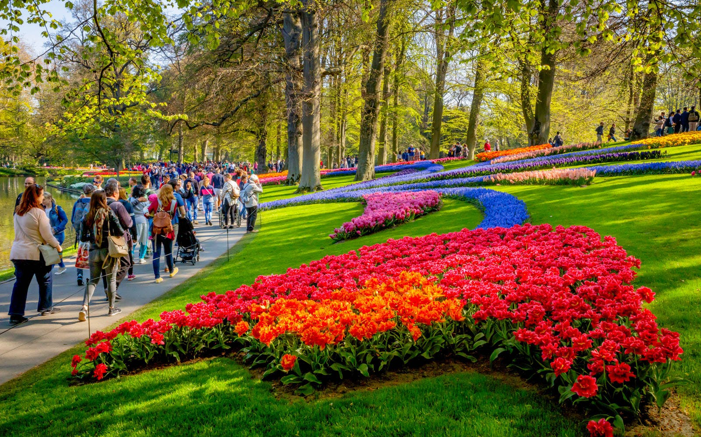
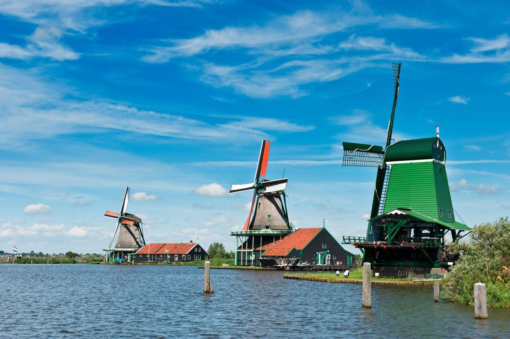

Netherland

Keukenhof
Keukenhof (lit. 'Kitchen garden'), also known as the Garden of Europe, is one of the world's largest flower gardens, situated in the municipality of Lisse, in the Netherlands.[1] According to the official website, Keukenhof Park covers an area of 32 hectares (79 acres) and approximately 7 million flower bulbs are planted in the gardens annually.[2][3] While it is widely known for its tulips, Keukenhof also features numerous other flowers, including hyacinths, daffodils, lilies, roses, carnations and irises.[4]
Keukenhof is located in the province of South Holland, south of Haarlem and southwest of Amsterdam in the area called the "Dune and Bulb Region" (Duin- en Bollenstreek). It is accessible by bus from Haarlem and Leiden train stations as well as Schiphol. By comparison, the Rijksmuseum receives an average of 8,000 visitors per day; the Efteling receives 14,000.

Giethoorn
Giethoorn (Dutch pronunciation: [ˈɣitɦoːr(ə)n]) is a village in the province of Overijssel, Netherlands, with a population of 2,795 in 2020. It is located in the municipality of Steenwijkerland, about 5 km (3.1 mi) southwest of Steenwijk. As a popular Dutch tourist destination both within the Netherlands and abroad, Giethoorn is often referred to as "Dutch Venice" (Dutch: Hollands Venetië) or the "Venice of the Netherlands".Giethoorn used to be a pedestrian precinct, but nowadays exceptions are made. It became locally famous, especially after 1958, when the Dutch filmmaker Bert Haanstra made his famous comedy Fanfare there. In the old part of the village, there were no roads (though a cycling path was eventually added), and all transport was undertaken by water over one of the many canals. The lakes in Giethoorn were formed by peat digging.

Zaanse Schans
Zaanse Schans (Dutch pronunciation: [ˈzaːnsə ˈsxɑns]) is a neighbourhood of Zaandam, near Zaandijk, Netherlands. It is best known for its collection of historic windmills and wooden houses that were relocated here from the wider region north of Amsterdam for preservation. From 1961 to 1974, old buildings from all over the region known as the Zaanstreek were relocated using lowboy trailers to Zaanse Schans.[1] Two of the windmills in Zaanse Schans are preserved on their original site where they were first constructed, and therefore do not constitute part of the relocated structures. The Zaans Museum, established in 1994, near the first Zaanse Schans windmill, is located south of the neighbourhood. This architectural reserve for Zaanse timber construction is a protected village scene because of its architectural-historical and landscape value.

Maastricht
Maestricht is a city and a municipality in the southeastern Netherlands. It is the capital and largest city of the province of Limburg. Maastricht is located on both sides of the Meuse (Dutch: Maas), at the point where the Jeker joins it. Mount Saint Peter is largely situated within the city's municipal borders. Maastricht is adjacent to the border with Belgium and is part of the Meuse-Rhine Euroregion, an international metropolis with a population of about 3.9 million, which includes the nearby German and Belgian cities of Aachen, Liège, and Hasselt.
Maastricht developed from a Roman settlement to a medieval river trade and religious centre. In the 16th century it became a garrison town and in the 19th century an early industrial centre.Today, the city is a thriving cultural and regional hub.